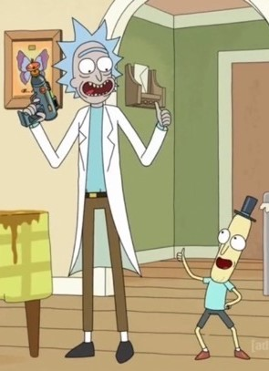

Temporadas
Comics
Extras
Detalles
Teorias
Mierdas
Mierdas / Mr. Pantalones Sucios

Mr. Pantalones Sucios
Una de los personajes mas misteriosos de la serie, apareció por primera vez en el capítulo 4 de la temporada 2, el capítulo trata sobre averiguar que personaje dentro de la casa es real, ya que unos parásitos estan implantando buenos recuerdos en nuestros protagonistas, sin entrar en mucho detalle sobre el episodio uno de estos personajes es "Mr. Pantalones Sucios" que a nosotros (el público) lo veíamos como un parásito más ya que no lo habíamos visto nunca en la serie, al final del capítulo solo quedan con vida nuestros protagonistas más Mr. Pantalones Sucios ya que a Morty se le ocurrió que los parásitos implantan buenos recuerdos y no malos, por lo cual solo tenia que mirar al personaje e intentar recordar que tipo de recuerdos tenía sobre el, pero claro, de repente Beth mira a Mr. Pantalones Sucios muy extrañada, saca una pistola y le pega un tiro, este personaje empieza a sangrar dando a entender de que es real y no un parásito a pesar de que nosotros no lo habíamos visto jamás y de que Beth no recordaba malos recuerdos con el, y lo mas importante, no tenian fotos del otro en su móvil jaja, parece que se tratase de nuestros protagonistas pero de otra dimensión, pero todavía no sabemos que historia tiene este personaje realmente, los creadores de la serie Dan Harmon y Justin Roiland dijeron en una entrevista que Mr. Pantalones Sucios es un Messeks adulto, lo cual nos deja un poco locos la los fans ya que no tiene mucho sentido, alomejor nos quieren trolear pero no lo creo.